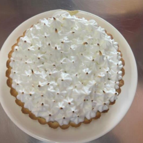

← Volver al módulo 1

Pie de Limón
Pie con relleno de limón y merengue suizo gratinado, delicioso y fresco.
Ingredientes
- 1 taza de harina
- ½ taza de azúcar
- 2 cucharadas de mantequilla sin sal
- 2 yemas
- ½ cucharilla de polvo de hornear
- 1 cucharilla de ralladura de limón
- ¼ taza de leche
- Relleno: 2 latas de leche condensada
- ½ taza de jugo de limón
- 4 yemas
- 1 cucharada de esencia de vainilla
- Ralladura de limón
- Merengue suizo: 5 claras de huevo, 1 taza de azúcar, 3 cucharadas de jugo de limón
Preparación
Mise en place; en un bol, mezclar harina, mantequilla y polvo de hornear.
Abrir un volcán y añadir yemas, azúcar, leche; integrar y compactar la masa.
Llevar al congelador 15 min y uslerear la masa en molde enmantecado; pinchar con tenedor y hornear 7-10 min.
Preparar relleno: integrar yemas con leche condensada, colar, añadir jugo de limón, ralladura y esencia.
Rellenar la masa horneada, hornear 5 min más.
Merengue suizo: batir claras con azúcar y jugo de limón a baño maría hasta disolver el azúcar; batir 10 min hasta punto nieve.
Decoramos con merengue y gratinamos en horno hasta dorar.